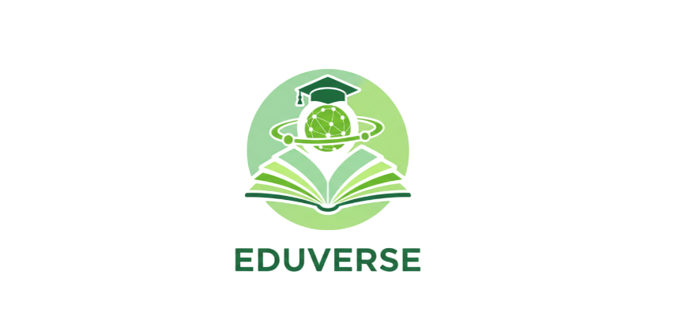
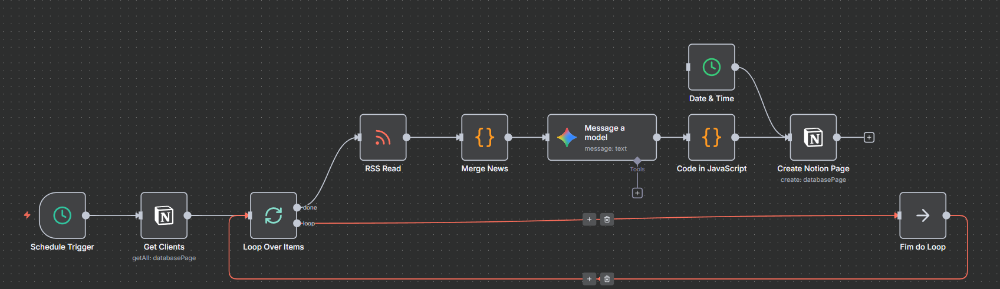
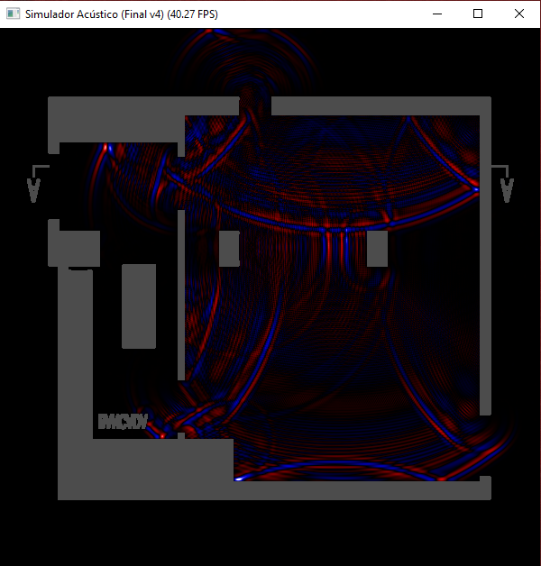
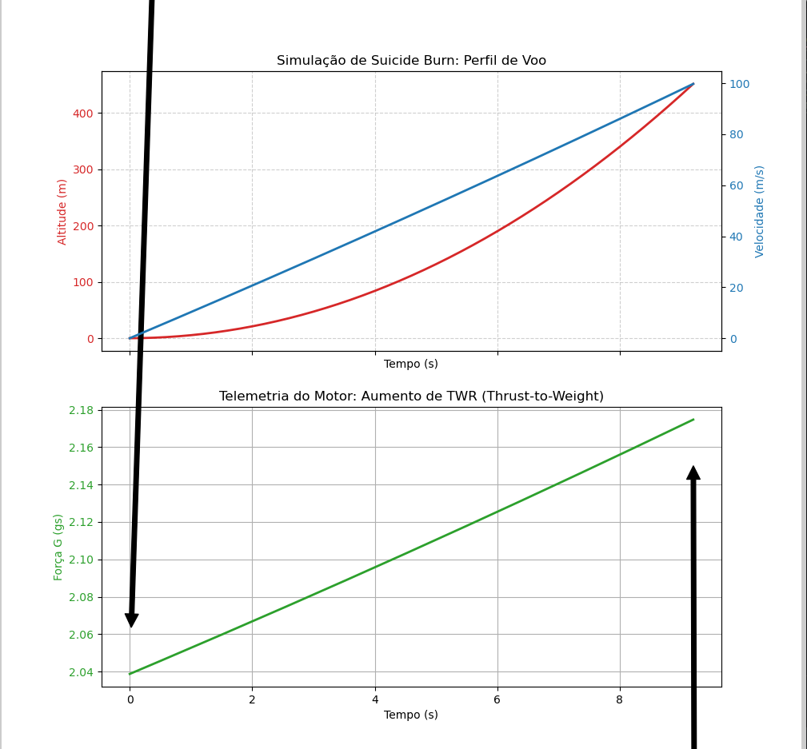
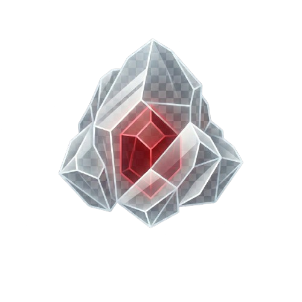
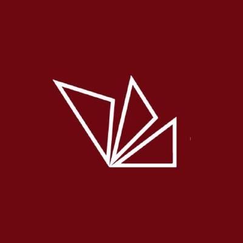
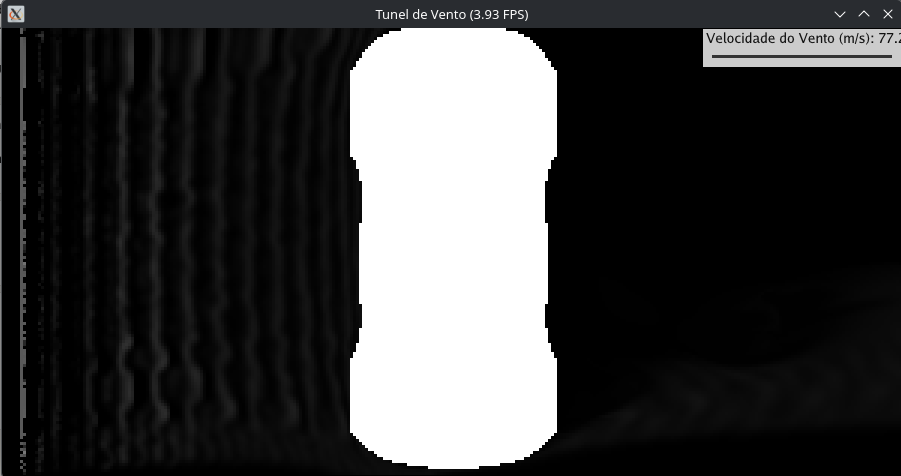
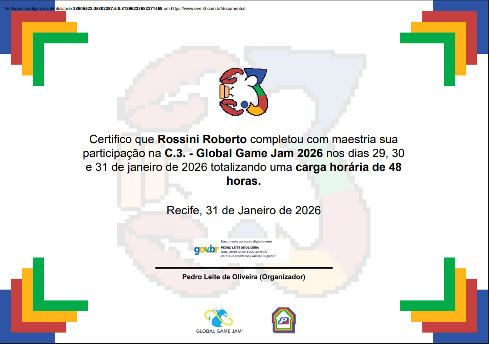
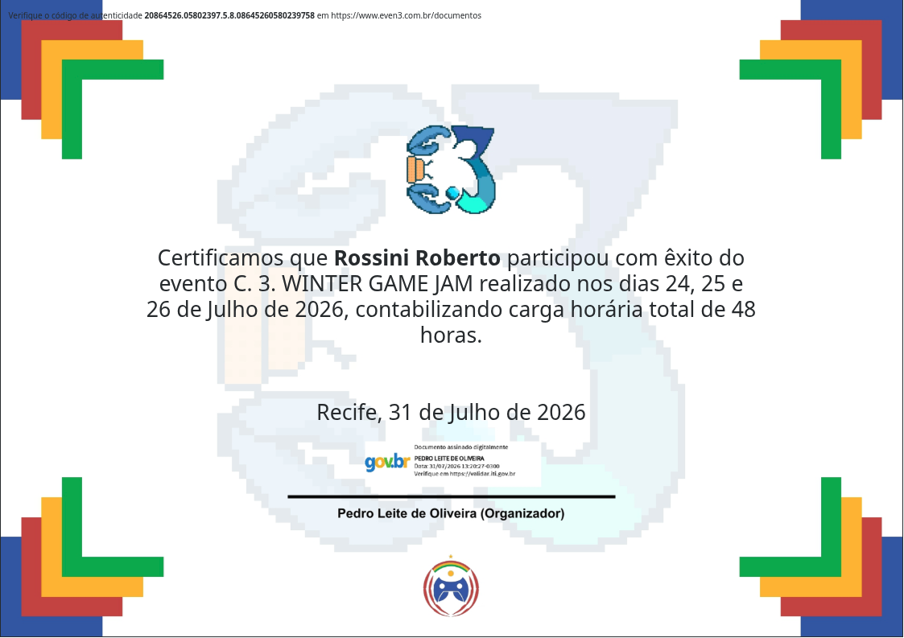

Eduverse Platform
Backend para plataforma educacional digital. Arquitetura robusta utilizando Java, Spring Boot e PostgreSQL. Integração de APIs e modelagem de banco de dados.
Ver no GitHub →Estudante de Ciência da Computação na UNICAP e Gerente na EJ Unicap. Foco em arquitetura de software, automação e desenvolvimento de sistemas robustos.
Curso Ciência da Computação na UNICAP (2025–2028) e atuo como Gerente na EJ Unicap, liderando a área de computação e ajudando a transformar ideias em sistemas que funcionam de verdade.
O interesse por código começou aos 8 anos, quando música e computador se cruzaram pela primeira vez. Hoje, meu trabalho mora nos bastidores: APIs em Java, automações e arquiteturas desenhadas para rodar com estabilidade e o mínimo de atrito.
Uso ferramentas de IA e agentes de código (Claude Code, OpenCode e afins) no dia a dia de desenvolvimento — desde prototipagem até automação de tarefas repetitivas.
Backend & Automação
Disponível para Projetos
Atuação no desenvolvimento de soluções tecnológicas e consultoria. Liderança técnica em projetos internos e gestão de demandas de TI.
Atuação no desenvolvimento de soluções tecnológicas e consultoria. Liderança técnica em projetos internos e gestão de demandas de TI.
Atuação no desenvolvimento de soluções tecnológicas e consultoria. Liderança técnica em projetos internos e gestão de demandas de TI.
Bacharelado com foco em Engenharia de Software e Sistemas. Desenvolvimento acadêmico em algoritmos e estruturas de dados.
Desenvolvimento dos fundamentos de lógica de programação e primeiros projetos práticos em Java e automação.

Backend para plataforma educacional digital. Arquitetura robusta utilizando Java, Spring Boot e PostgreSQL. Integração de APIs e modelagem de banco de dados.
Ver no GitHub →
Engine 2D desenvolvida do zero (from scratch) em C++. Foco em arquitetura de baixo nível, gerenciamento manual de memória, loop de jogo otimizado e renderização de sprites.
Ver Código no GitHub →
Automação complexa via n8n integrando Gemini API e Notion. Gera ideias de conteúdo baseadas em RSS feeds e as organiza automaticamente.
Ver Fluxo →Jogo 2D sobre um mundo distópico. Vencedor nas categorias "Melhor Visual" e "Melhor Jogo da Jam" na Poli UPE. Desenvolvido por uma equipe de 5 pessoas em menos de 48h.
Ver Projeto na GGJ →
Simulador de propagação acústica 2D em tempo real, acelerado via GPU usando Taichi Lang.
Ver no GitHub →
Uma ferramenta de simulação numérica de alta precisão em C++ para calcular manobras de pouso (Suicide Burn) com massa variável e arrasto gravitacional não-uniforme. Inclui pipeline de visualização de telemetria em Python.
Ver no GitHub →
Um compilador nativo desenvolvido do zero em C puro, traduzindo código estruturado direto para Assembly x86_64. Implementa escopo léxico rigoroso via Tabela de Símbolos plana (cache-friendly) e controle de fluxo com curto-circuito lógico no hardware.
Ver no GitHub →
Plataforma interna da EJ Unicap para gerenciar demandas, clientes e projetos da empresa júnior. Backend em Python/FastAPI com PostgreSQL, desenhada para rodar a operação do dia a dia.
Ver no GitHub →
Simulador de escoamento de fluidos 2D em tempo real, utilizando métodos de Lattice Boltzmann (LBM) para alta precisão e acelerado por GPU com Taichi Lang. Permite visualização interativa de padrões de fluxo e otimização de perfis aerodinâmicos.
Ver no GitHub →Notebook matemático local estilo Jupyter/Colab. Você digita LaTeX, o backend converte para SymPy e resolve simbolicamente (integrais, derivadas, limites) devolvendo o resultado e os pontos para gráficos 2D (Plotly) e 3D (Three.js) orbitáveis.
Ver no GitHub →Bot de Telegram com RAG que centraliza os documentos da EJ Unicap e usa LLM para responder perguntas, mantendo o conhecimento da empresa sempre acessível e atualizado.
Ver no GitHub →Dados ao vivo do meu perfil público.
Falha ao carregar dados do GitHub.

Projeto: Don't let it fall (Lava Prato Productions)
Jogo vencedor nas categorias Melhor Visual e Melhor Jogo da Jam. Desenvolvido do zero em menos de 48 horas por uma equipe de 5 pessoas sob o tema global "Mask/Máscara".
Validar Certificado Original →
Projeto: O ultimo backup
Desenvolvido do zero em menos de 48 horas por uma equipe de 5 pessoas sob o tema global "Mask/Máscara".
Validar Certificado Original →O que eu exploro quando não estou buildando APIs.
Estudos ativos em Purple Teaming. Familiaridade com ferramentas do Kali Linux (Nmap, Burp Suite, etc) e práticas de Secure Coding (OWASP Top 10).
Entusiasta de arquitetura de computadores. Gosto de entender como o software conversa com o hardware, explorando C e Assembly ocasionalmente.
Contribuição e consumo ativo de softwares livres. Acredito na democratização do código e no aprendizado colaborativo.
A máquina onde tudo isso é construído.
rossini@arch ~$ neofetch
/\
/ \
/ \
/ \
/ ,, \
/ | | \
/_-'' ''-_\
rossini@arch
─────────────
OSArch Linux x86_64
Kernel7.1.5-arch1-2
Uptime6h 13m
Packages1116 (pacman + flatpak)
Shellzsh 5.9.2
DEKDE Plasma 6.7.3 · Wayland
WMKWin
CPUXeon E5-2630 v4 (20) @ 3.10 GHz
GPURadeon RX 580 2048SP
Memory15.5 GiB
Disk371 GiB / 657 GiB
HostQIYIDA X99-D4
Dica: digite help para ver os comandos.
rossini@arch ~$